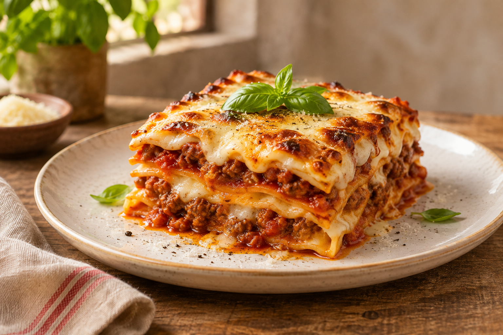

Lasagna

Description
Indulge in our hearty, oven-baked lasagna, featuring layers of tender pasta, rich and savory meat sauce, creamy béchamel, and perfectly melted cheese. Baked to golden perfection and finished with fresh herbs, every bite delivers a comforting taste of classic Italian cuisine.
Ingredients
- Lasagna noodles
- Ground beef
- Tomato sauce
- Ricotta cheese
- Mozzarella and Parmesan cheese
- Onion, garlic, and Italian seasoning
- Salt and pepper
Steps
- Prepare the meat sauce: Cook ground beef with chopped onion and garlic. Add tomato sauce and Italian seasoning, then simmer for 15 minutes./li>
- Prepare the noodles: Boil lasagna noodles according to package instructions.
- Assemble the lasagna: Spread a layer of meat sauce in a baking dish. Add noodles, ricotta, mozzarella, and more sauce. Repeat the layers.
- Bake: Top with mozzarella and Parmesan. Cover with foil and bake at 375°F (190°C) for 25 minutes.
- Finish and serve: Remove the foil, bake for another 15 minutes until golden, and let rest for 10 minutes before serving.
Back